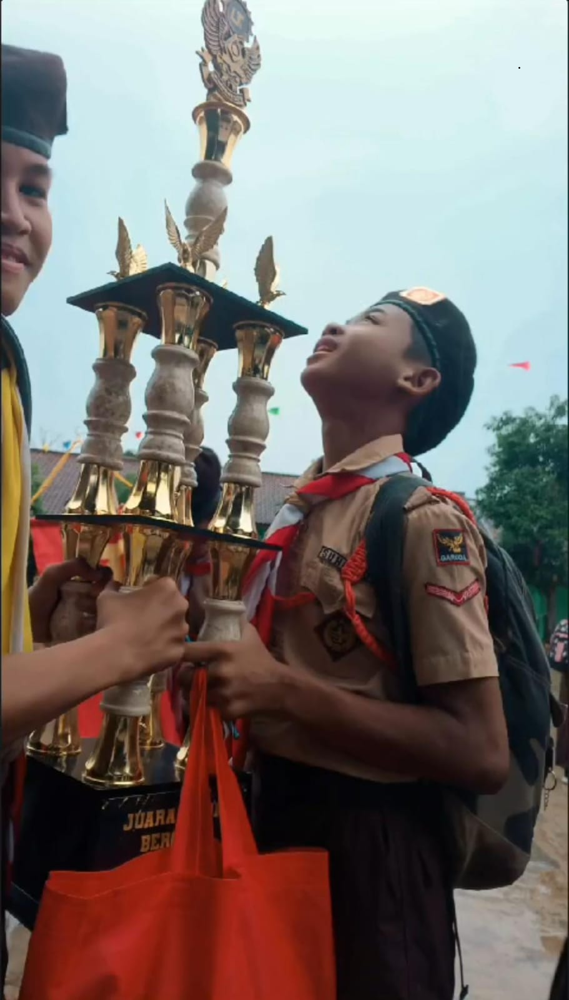

Siswa Sekolah Meraih Juara 1 Lomba Tingkat 1
Keberhasilan Memenangkan Lomba Tingkat 1 Pramuka Mengikuti Lomba Tingkat 1 Pramuka merupakan pengalaman yang sangat berkesan dan membanggakan. Dalam perlombaan tersebut, kami mengikuti berbagai kegiatan yang menguji keterampilan, kekompakan, kedisiplinan, serta pengetahuan kepramukaan. Untuk meraih kemenangan, kami harus berlatih dengan sungguh-sungguh dan saling bekerja sama sebagai satu tim. Meskipun menghadapi berbagai tantangan dan rasa lelah, kami tetap berusaha memberikan yang terbaik dan tidak mudah menyerah. Setelah melalui berbagai perlombaan, akhirnya kerja keras dan kekompakan kami membuahkan hasil. Kami berhasil meraih kemenangan dalam Lomba Tingkat 1. Keberhasilan tersebut membuat kami merasa sangat bangga dan bahagia karena usaha yang dilakukan bersama-sama tidak sia-sia. Dari pengalaman ini, kami belajar bahwa kemenangan bukan hanya tentang menjadi yang terbaik, tetapi juga tentang kerja sama, kedisiplinan, tanggung jawab, dan semangat pantang menyerah. Prestasi ini menjadi motivasi bagi kami untuk terus berkembang dan meraih prestasi lainnya di masa depan. Tim peserta didik dari SMA Garuda Bhakti Pertiwi berhasil meraih juara pertama dalam lomba Tingkat 1. Prestasi ini menjadi kebanggaan sekolah dan membuktikan komitmen dalam meningkatkan kualitas kekompakan.